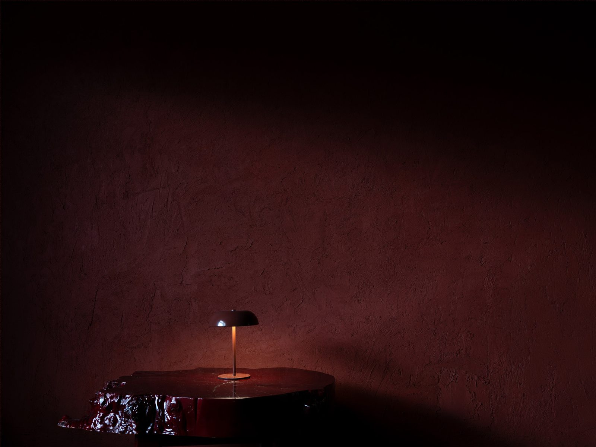

刷々sassa
本のページをめくる音。An art bookstore & stay in a renovated wooden row house.
指先が灯りになります — your fingertip is the lamp
Scroll
本のページをめくる音。An art bookstore & stay in a renovated wooden row house.
指先が灯りになります — your fingertip is the lamp
大阪・放出。
商店街に残る木造長屋を改修した、小さなアートブックストアと一日一組の宿。
本と旅が静かに交わる場所。
A small art bookstore and a one-room guesthouse set within a renovated wooden row house in a local shopping street. A quiet place where books and journeys meet. Hanaten, Osaka.

放出の商店街 — the shopping street

約27㎡の客室に、クイーンサイズのベッドがひとつ。土壁や木の手触りを残した、静かな滞在。
A 27 m² room with a single queen bed, finished in earthen walls and natural wood.
View Stay → ご予約 ↗建築、アート、写真集。国内外から集めた本を、一冊ずつゆっくりと選んでいます。
Architecture, art, and photobooks. A curated selection from Japan and around the world, chosen one book at a time.
View Books →

Let your journey unfold, one page at a time.
Airbnbで予約する ↗ご不明な点は メール でもお気軽に。